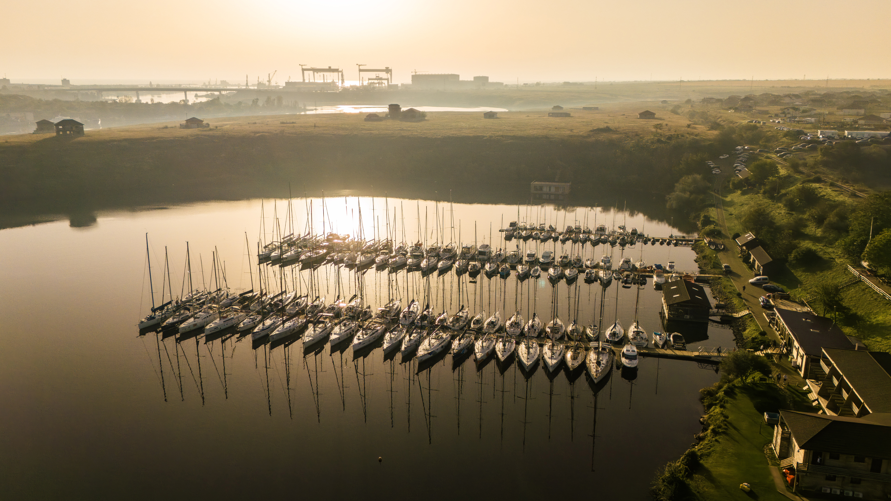

Acces la o flotă globală de monocoque și catamarane — de la Baleare la Cyclades, de la British Virgin Islands la Tahiti. Cu sau fără skipper.
Lucrăm cu armatori și brokeri de încredere în peste 30 de țări. Îți recomandăm cea mai bună destinație în funcție de sezon, vânt, buget și vibe-ul grupului.
Sau lasă-ne pe noi să o alegem, în funcție de sezon, vânt și vibe-ul grupului tău.
Velier sport, monocoque clasic sau catamaran de lux. Cu skipper, hostess și chef la bord — opțional.
Cu briefing, provizii, traseu, plan B și liniștea că tu doar te urci la bord.
Avem acces la o gamă largă de ambarcațiuni — în funcție de mărimea grupului, nivelul de confort dorit și destinație.
Da. Adăugăm un skipper certificat la bord, iar tu te bucuri pur și simplu de călătorie. În anumite destinații, brevetul ICC sau RYA poate fi necesar pentru charter „bareboat".
În medie 4–10 persoane, în funcție de mărimea ambarcațiunii. Pentru grupuri mai mari, organizăm flotile cu mai multe bărci care navighează împreună.
De obicei, 50% la rezervare și 50% cu 30 de zile înainte de data de plecare. Pentru grupuri corporate avem termeni flexibili, agreați la contract.
Variază pe destinație. În general: barca, asigurarea, dotările de bord. Skipperul, combustibilul, taxele de port și mâncarea sunt de obicei separate. Îți facem o ofertă transparentă, fără surprize.
Trimite-ne destinația, perioada și mărimea grupului. Îți răspundem cu 2–3 opțiuni concrete în 48 de ore.